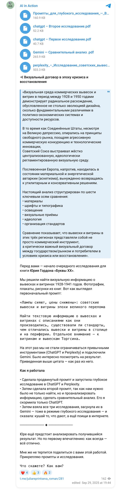
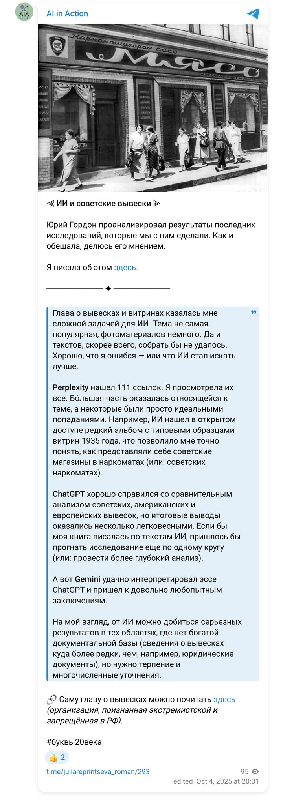

The book “Letters of the 20th Century” · September — October 2025 · research 04
Find visual and textual sources on shop signs and window displays of 1928–1941: how they were made, whether standards existed, how the capital differed from the provinces; Torgsin stores separately.
Two briefs — one for collecting the corpus and one for comparative analysis (USSR 1928–41, Depression-era USA, post-war Europe). Three studies in cascade: the ChatGPT and Perplexity results (111 links) were fed into Gemini, with a search of Western sources.
ChatGPT Deep Research, Perplexity, Gemini Deep Research
Below are the briefs the models received, the finished reports in PDF and documents, and the publications made along the way.
Briefs
My document · project working document · 29 September 2025
Topic Soviet shop signs and window displays in the USSR, 1928–1941 (with an emphasis on Torgsin): visual sources, standards, production practices, capital/provinces differences.
Goal Collect the fullest possible corpus of visual materials (photographs, illustrations, posters, pages from books and magazines, diagrams/drawings) on shop signs and window displays in the USSR in 1928–1941. Collect textual sources: norms/standards, instructions, manuals, articles on the technology of sign-making/window dressing, maintenance practices, as well as notes and field observations by contemporaries. Identify the differences between the capital (Moscow/Leningrad) and the provinces (regions, industrial towns, small towns). Work separately on the windows and signs of Torgsin (the store chain): a visual corpus + documents on standardisation, design practices, case studies.
Geography and period — Geography: USSR (Moscow, Leningrad, capitals of union/autonomous republics, provincial/regional centres, small towns). — Period: 1928–1941 (strictly before the start of the Great Patriotic War). Isolated materials from 1926–1927 and 1942–1945 are allowed only as context, with a clear justification in the notes.
Scope and depth — Visual sources: “the more the better”, but without duplicates; where duplicated, keep the best quality and note the links. — Textual sources: prioritise primary ones (norms, technical instructions, GOST/OST/departmental circulars, internal memos, manuals, trade journals), then secondary surveys and studies.
A. Visual materials
B. Textual materials
Typology:
Special section “Torgsin”: A corpus of images, regulations, house elements, window case studies (assortment/price tags), conclusions on the visual code and standardisation.
Project index file (index_files.md): a list of all collected files/tables with annotations and status (done/in progress/disputed). Summary report (5–8 pages): key findings, examples/illustrations, links to the catalogues, open questions.
Search strategy (stages) Seed scan by institution: national/regional film, photo and print-press archives, digital collections of museums and libraries, newspaper databases, trade journals of the pre-revolutionary/Soviet period, exhibition catalogues.
Key queries (RU + possible variants) — combine and vary: “Soviet signs 1930”, “window dressing 1930s”, “shop window 1935”, “illuminated sign 1930s”, “enamel plaques 1930”, “standard signs”, “sign norms”, “window dresser”, “window display guidelines”, “GOST sign 1930”, “OST sign”, “window dressing instructions”, “Torgsin shop window”, “Torgsin sign”, “Torgsin façade”, “Sovetskaya Torgovlya magazine window”, “advertising design 1930s”, “department store window Moscow 1936”, “hanging sign 1930”, “neon advertising USSR 1930s” (if used), “illuminated advertising Moscow 1930”, “Leningrad shop window 1930”, “regional town shop window 1930”.
Priorities/order (if time is short): Torgsin: visuals + norms → Capitals (Moscow/Leningrad): windows and standards → Regional cases (3–5 towns of different sizes) → Timeline and typology → Summary report.
Reporting and control: Every N hours — a short log: what was found, how many objects were added, where the bottlenecks are. At the end — a “blacklist” of false/dubious sources and duplicate collections.
Excellent, you have provided a very detailed brief. Before I begin the deep research, please clarify:
- Is there a priority for source languages other than Russian? — yes, include them
- Should any particular archives be prioritised (RGANTD, the Presidential Library, “Artefact”, TASS Photo Chronicle)? — all archives
- Should museum artefacts (window models, plaques, signs) be included? — yes, include them
- Do you plan to use the results in a printed book? — yes, I do
Now, based on this research, do a comparative analysis of shop signs and window displays in post-war Europe, the USA of the Great Depression, and the Soviet ones. Use this information and the information from the attached file — Perplexity.
The model’s clarifications and the answers:
- Time frame for post-war Europe? — 1945–1950
- For the USA — only the Great Depression or wider? — 1929–1950 with an emphasis on the Great Depression
- Which aspects matter more: materials, typefaces, typography, lighting, visual devices, ideology, organisation of trade? — all matter; also search the internet for Western sources
Results
Project document · 29 September 2025
The visual environment of commercial signs and shop windows between 1928 and 1950 shows a radical divergence, driven less by the evolution of design than by fundamental differences in political and economic systems and in access to resources. The USA, despite the Great Depression, relied on free-market principles; the Soviet Union built a rigidly centralised, ideologically regulated visual environment; post-war Europe lived in a state of material and energy autarky.
The analysis is structured along six axes: materials, typefaces and typography, lighting, visual devices, ideology, and the organisation of standards.
The function of advertising was strictly limited: spending on it could not exceed 0.1% of turnover. Signs carried either a utilitarian slogan (“If you smell gas, call 04”) or the name of the organisation (“Gastronom”, “Raipotrebsoyuz”).
Standardisation and typographic dictatorship. In 1930 the All-Union Standardisation Committee adopted OST 1337 “Type-metal typefaces”, fixing just 31 typefaces for public needs. Street lettering meant large sans-serif (grotesque) capitals, 100–300 mm high or more. Unification stripped type of individuality, making it part of the state apparatus.
Capital and provinces. In the capitals — electric lighting and neon (glowing slogans such as “Victory of Socialism”); in the regions — wooden or metal plaques without lighting.
The Torgsin case. On the façades — large cut-metal or illuminated lettering, often duplicated in Latin script; in the windows — scarce goods and luxury (furs, gold).
Aggressive design as an anti-crisis measure. Neon was cheap and eye-catching; thousands of small shops put up coloured signs to stand out against the poverty. Art Deco and Moderne typography: bold capitals, italics, stylised logos; “graphic agitation” — an order to buy. Shop windows were “cinematic”.
Material regression and energy shortage: wood, plain glass, remnants of pre-war structures; neon was a rarity until the late 1940s. “Empty” windows and a new aesthetic: in London’s West End the emphasis shifted from abundance to concept and narrative — the basis of 1950s functionalism (“good form” in Germany).
| Region | Regulation | Style | Function |
|---|---|---|---|
| USSR | Rigid centralisation (OST 1337) | Sans-serif, capitals, geometric, large size | Official identification of a state enterprise |
| USA | Self-regulation through associations and journals | Art Deco/Moderne, bold capitals, italics, logos | Aggressive branding, “graphic agitation” |
| Europe | Local rules, pre-war practice | Classical, legible, varying by country | Utilitarian legibility |
USA — neon spectacle, the round-the-clock “American dream”. USSR — utilitarian electrification: neon appeared in Moscow in 1932 and remained a privilege of the capitals; in the backwoods — kerosene. Europe — energy austerity.
USSR — “pyramids” of identical goods, mannequins, festive agitation. USA — scenes from films, “selling a dream”. Europe — a narrative of austerity.
| Indicator | USSR | USA | Europe |
|---|---|---|---|
| Ideological focus | Collectivism, functionality | Consumerism, the “American dream” | Reconstruction, modest consumption |
| Organisation | Centralised (Narkomtorg); OST 1337, the 1935 “Album of Shop Window Designs” | Decentralised; National Electrical Code | Local guilds, municipal control; from 1948 — the Marshall Plan |
Three models of adaptation: USSR — the dictatorship of unification; USA — the aggression of competition; Europe — the austerity of reconstruction. Legacy: Soviet standardisation defined the monumental and utilitarian character of urban design for decades; the American neon era shaped the principles of modern branding; European austerity laid the foundations of functionalism and Scandinavian minimalism.
Defining the research focus. I am starting a comprehensive comparative analysis of commercial signs and shop windows in three historical contexts… My task is to compare these regions by materials, typography, lighting, visual devices, ideological underpinnings and the organisation of trade.
Gathering the initial data. The first stage is extracting information from the documents provided (the study of Soviet signs and the comparative material).
Next steps. To meet the requirement of using Western sources, I initiated a search: sign design in the USA during the Depression and neon; shop windows of post-war Western Europe.
Typography and ideology. In the USSR — the strict OST 1337 standard; in the USA — Art Deco-style “graphic agitation”.
Contrast in lighting and materials. Neon in the USA before the Depression; in the USSR — limited from the 1930s; in Europe — a luxury.
Further deepening. Two gaps: the evolution of American typography; continental Europe (France, Germany) 1945–1950.
The key contradiction: East and West of Europe. Western Europe — “creativity out of scarcity”; East Germany — a “visual occupation regime”, direct political propaganda in shop windows — a bridge between the USSR and Europe.
Final detailing of the European material. Screen printing as a cheap technique; conceptual displays in Switzerland (wire, Jean Tinguely).
Completing data collection. A level of saturation sufficient for an expert report has been reached. Further searches would be of low value.
Publications
My reports on the work (in Russian). Each links to the original.

